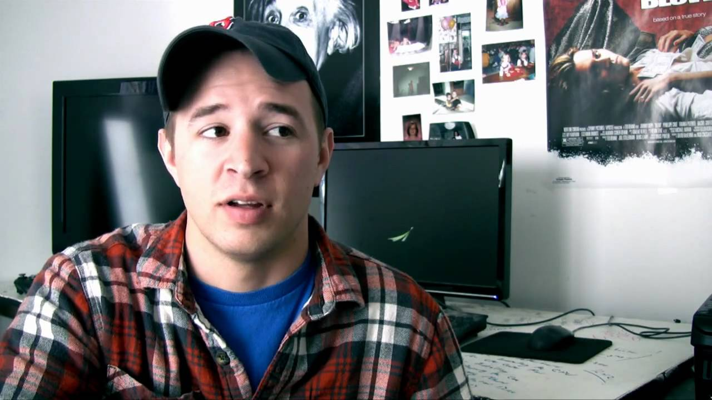

Hello internet traveler, My name's BJ. I graduated with a BS and MS in computer science from SUNY Polytechnic Institute in 2019, and I'm currently working as a software developer.
I enjoy playing music (guitar/drums), computer programming, skiing/skating/ snowboarding, semi-casually consuming anime and video games, and random tech stuff.
In high school I picked up an interest in programming and started to learn C and C++, thanks to the awesome youtube channel thenewboston. Shoutout to my man Bucky Roberts
